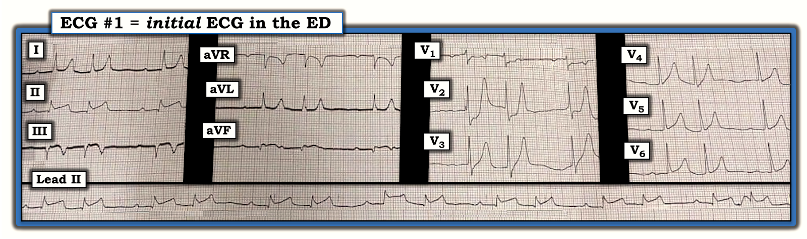
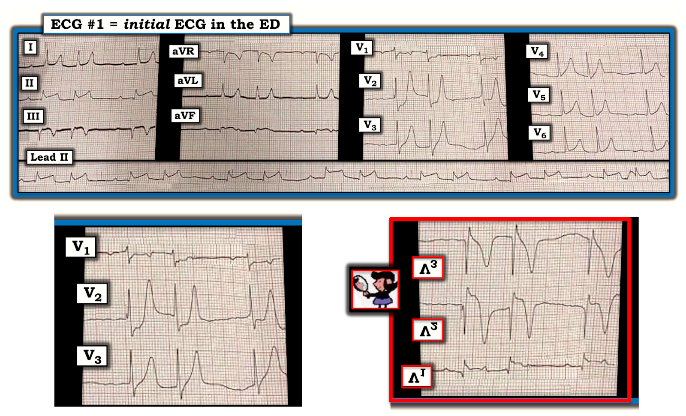
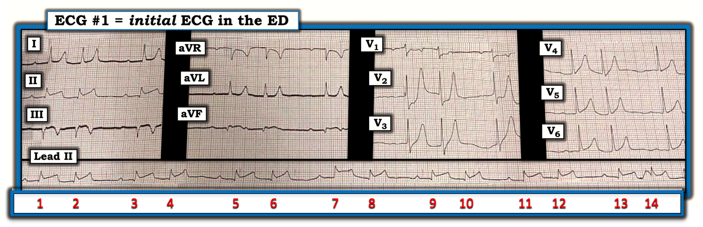
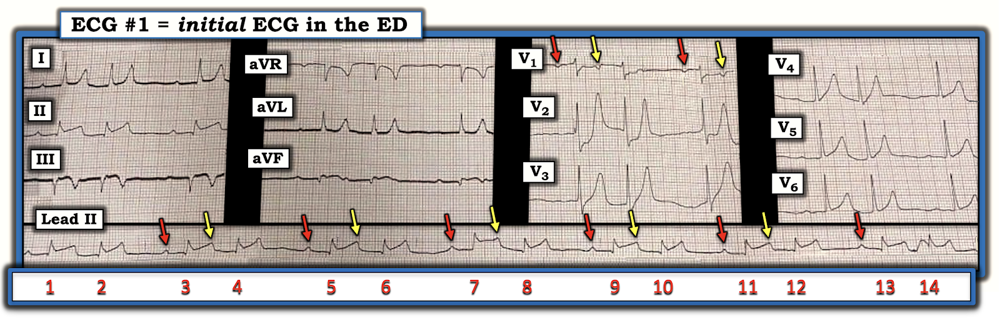
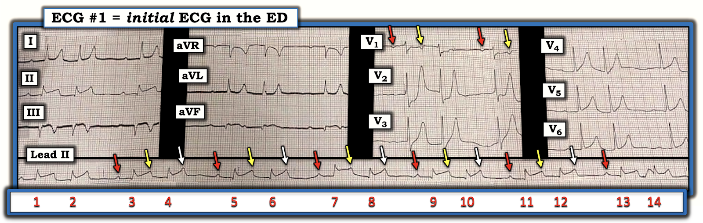
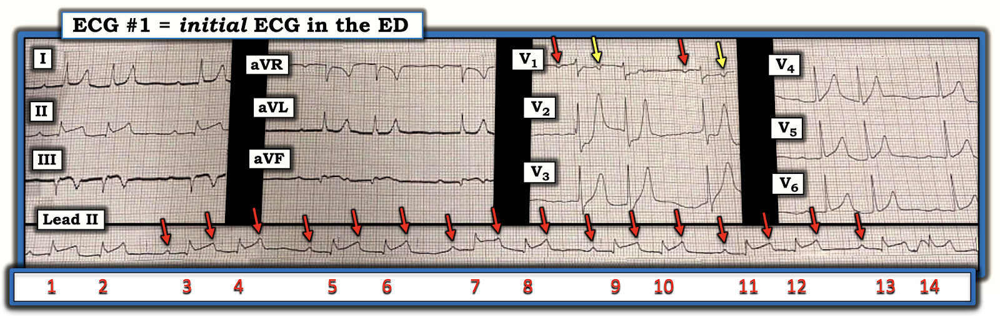
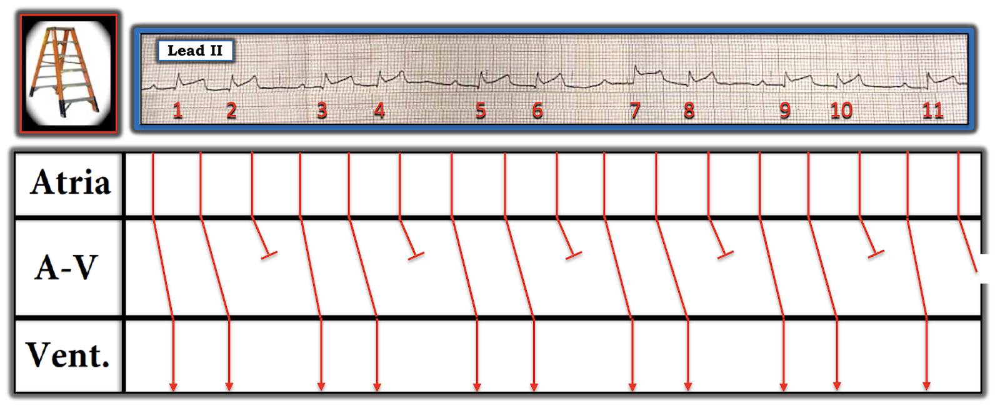

ECG Blog #232 (47) — Nhịp đôi là gì?
Bạn được đưa điện tâm đồ trong Hình-1 — nhưng không có bất kỳ bệnh sử nào đi kèm.
- Nguyên nhân của các nhát đi thành cặp trên dải nhịp chuyển đạo II dài là gì?


CÁCH TIẾP CẬN TUẦN TỰ CỦA TÔI VỚI CA NÀY:
Tần số & Nhịp: Phức bộ QRS hẹp ở cả 12 chuyển đạo — vì vậy nhịp là nhịp trên thất.
- LƯU Ý #1: Dải nhịp chuyển đạo II dài ở cuối bản ghi không liên tục với 12 chuyển đạo phía trên. Dải nhịp chuyển đạo II dài này gồm tổng cộng 14 nhát liên tiếp — và cho thấy một “nhịp đôi” (tức là, có 7 cặp nhát xuất hiện theo một kiểu lặp đi lặp lại, xen kẽ khoảng R-R ngắn hơn và dài hơn).
- Chúng ta BIẾT rằng có ít nhất một phần dẫn truyền — vì có vẻ như mỗi phức bộ QRS ở cuối mỗi khoảng R-R dài hơn đều có một sóng P dương đi trước với khoảng PR cố định (dù kéo dài).
===============================
LƯU Ý #2: Ở thời điểm này trong quá trình đánh giá — tôi chưa chắc chắn về căn nguyên của nhịp. Dù vậy, trên phương diện lâm sàng — tôi cho rằng việc xác định chính xác chẩn đoán nhịp chưa phải là điều thiết yếu, bởi vì: i) Đối với xử trí ban đầu bệnh nhân này — Điều quan trọng nhất là nhận ra đây là một nhịp trên thất với tần số thất chấp nhận được, trong đó ít nhất một số nhát được dẫn truyền từ xoang; và, ii) Tôi không thể không chú ý tới các thay đổi sóng ST-T rõ rệt trên 12 chuyển đạo, vốn đòi hỏi được quan tâm khẩn cấp hơn!
===============================
ĐIỂM THEN CHỐT (PEARL) #1: Như đã nói ở trên — nhịp trong Hình-1 là “nhịp đôi”, trên thất, và đáng chú ý ở chỗ nhát thứ 1 trong mỗi cặp của 7 cặp nhát là nhát dẫn truyền từ xoang (dù có khoảng PR kéo dài). Sẽ rất hữu ích nếu nắm được Chẩn đoán Phân biệt của một nhịp trên thất kiểu nhịp đôi khi nhát thứ 1 trong mỗi cặp được dẫn truyền từ xoang. Chẩn đoán phân biệt này gồm:
- Nhịp xoang kèm nhịp đôi nhĩ hoặc nhịp đôi bộ nối (tức là, cứ cách một nhát lại có một PAC hoặc một PJC).
- Nhịp xoang kèm nhịp ba nhĩ — trong đó cứ sóng P thứ ba là một PAC bị "blốc" (không dẫn truyền).
- Blốc SA ( = Blốc Xoang-Nhĩ).
- Blốc AV độ 2 Mobitz I ( = Wenckebach AV) với dẫn truyền AV 3:2.
- Blốc AV độ 2 Mobitz II.
==========================
Vượt ra ngoài phần cốt lõi: Về mặt kỹ thuật, còn một vài nguyên nhân khác gây ra nhịp kiểu nhịp đôi mà không cần xét đến trong ca hôm nay, vì nhịp hoặc không hoàn toàn là nhịp trên thất — hoặc — vì nhát thứ 1 trong mỗi nhóm không được dẫn truyền từ xoang. Các nguyên nhân khác này gồm:
- Nhịp đôi thất (tức là, cứ cách một nhát lại có một PVC).
- Rung nhĩ, nhịp nhanh nhĩ hoặc cuồng nhĩ với dẫn truyền kiểu Wenckebach.
- "Thoát–Bắt được" (nhát thứ 1 trong mỗi nhóm là một nhát thoát bộ nối hoặc nhát thoát thất — theo sau là một nhát được dẫn truyền).
==========================
ĐIỂM THEN CHỐT (PEARL) #2: Mặc dù chẩn đoán blốc AV độ 2 Mobitz II sẽ là điều đáng lo ngay lập tức (vì cần phải tạo nhịp tim) — Mobitz II rất khó xảy ra trong Hình-1, bởi vì: i) Trong các dạng blốc AV độ 2 — Mobitz II cực kỳ hiếm gặp (tức là, Theo kinh nghiệm của tôi — ít nhất 90-95% các blốc AV độ 2 thuộc loại Mobitz I); và, ii) Với Mobitz II, QRS hầu như luôn rộng (nhưng QRS lại hẹp trong Hình-1).
CÁC BƯỚC TIẾP THEO Trong Đánh giá của Tôi:
Các chuyển đạo chi trong Hình-1 gợi ý đã có nhồi máu cơ tim thành dưới gần đây:
- Có sóng Q ở cả 3 chuyển đạo thành dưới. Sóng Q lớn nhất thấy ở chuyển đạo III, biểu hiện dưới dạng phức bộ QS (tức là, QRS âm hoàn toàn). Xét tới việc phức bộ QRS ở chuyển đạo aVF nhỏ đến mức nào — thì sóng Q ở chuyển đạo này vừa sâu vừa rộng. Ngược lại — sóng q ở chuyển đạo II nhỏ và hẹp — nhưng việc cả 3 chuyển đạo thành dưới đều có sóng Q (và sóng Q rất lớn ở 2 trong 3 chuyển đạo) xác nhận rằng nhồi máu cơ tim thành dưới đã xảy ra vào một thời điểm nào đó.
- Cả 3 chuyển đạo thành dưới đều có ít nhất một mức độ ST chênh lên. Đoạn ST trông tối cấp ở chuyển đạo II và aVF (đoạn ST đi lên thẳng ở chuyển đạo II; sóng T và đoạn ST “đầy đặn” hơn ở cả II và aVF). Nói một cách tương đối — mức ST chênh lên ở chuyển đạo III ít hơn, và đi kèm sóng T đảo ngược khá sâu, phù hợp với “sóng T tái tưới máu”.
- Hình ảnh sóng ST-T ở chuyển đạo I bên caovà aVL gần như là hình “soi gương” đối nghịch với sóng ST-T ở chuyển đạo III. Tức là — đoạn ST ở cả hai chuyển đạo này bị thẳng đuỗn (dù không chênh xuống) — và các sóng T cao, nhọn gần như “ngược lại” với sóng T đảo ngược sâu thấy ở chuyển đạo III.
NHẬN ĐỊNH: Đã có một nhồi máu cơ tim Thành dưới gần đây. Khó có thể “định tuổi” ổ nhồi máu này khi không có bệnh sử. Tôi “đoán” là “gần đây” (tức là, có lẽ cách đây 6 đến 12 giờ, cho tới 1 đến 2 ngày trước) — nhưng có lẽ không cấp tính đến mức xảy ra trong vòng khoảng 1 đến 4 giờ qua.
- Tôi dựa “ước lượng thời điểm” này trên dấu hiệu sóng Q đã hình thành rõ (rất lớn ở chuyển đạo III và aVF) + sóng T tái tưới máu sâu ở chuyển đạo III (gợi ý rằng ít nhất đã một thời gian trôi qua) — nhưng vẫn còn tồn tại một mức ST chênh lên ở cả 3 chuyển đạo thành dưới (với sóng ST-T trông tối cấp ở chuyển đạo II và aVF).
- CẢNH BÁO: Điều gì cũng có thể xảy ra. Đôi khi — sóng Q sâu đến bất ngờ có thể hình thành chỉ trong vòng 1-2 giờ! Hơn nữa, diễn tiến của nhồi máu đang tiến triển không phải lúc nào cũng liền mạch — mà đôi khi có thể “ngắt quãng” (stuttering) — với tự tái thông, rồi tắc lại, và việc tái thông và/hoặc tắc lại này đôi khi xảy ra nhiều lần cho tới khi đạt được kết cục cuối cùng.
CÁC CHUYỂN ĐẠO TRƯỚC NGỰC trên điện tâm đồ #1
Các chuyển đạo trước ngực trên điện tâm đồ #1 phù hợp với nhồi máu cơ tim Thành sau gần đây — vốn thường đi kèm nhồi máu cơ tim thành dưới. Dễ nhận ra điều này nhất khi dùng “Nghiệm pháp Soi gương” (mirror test) mà tôi minh họa trong Hình-2 (Xem ECG Blog #193 — để biết thêm về Nghiệm pháp “Soi gương”).
- Hình ảnh soi gương của chuyển đạo V2 và V3 (trong khung viền ĐỎ ở Hình-2) — trông tương tự (dù còn ấn tượng hơn) với những gì ta thấy ở chuyển đạo III trên điện tâm đồ #1 — cụ thể là ST chênh lên mức độ vừa phải đi kèm sóng T đảo ngược sâu, đối xứng. Điều này phù hợp với sóng T tái tưới máu ở vị trí thành sau thất trái.
- Áp dụng Nghiệm pháp Soi gương trong Hình-2 cũng giúp hiểu được sự gia tăng không tương xứng của biên độ sóng R ở các chuyển đạo trước (thấy ở chuyển đạo V2 và V3 của điện tâm đồ #1). Khi nhìn dưới dạng hình soi gương — sự gia tăng không tương xứng biên độ sóng R ở V2 và V3 này hiện ra thành các sóng Q sâu dần (trong khung viền ĐỎ ở Hình-2).


XEM KỸ HƠN NHỊP:
Giờ đây khi đã biết bệnh nhân này có nhồi máu cơ tim dưới-sau gần đây — việc đọc dải nhịp chuyển đạo II dài trên điện tâm đồ #1 trở nên DỄ HƠN. Cho rõ ràng — tôi đã đánh số các nhát trong Hình-3.


=======================================
LƯU Ý: Một số bạn đọc có thể muốn nghe ECG Audio PEARL dài 5:45 phút trước khi đọc Suy nghĩ của tôi về điện tâm đồ trong Hình-3. Bạn cứ thoải mái xem lại Suy nghĩ của tôi về bản ghi này vào bất kỳ lúc nào (nằm bên dưới ECG MP-47).
=======================================

ECG Media PEARL #47 (Audio 5:45 phút) hôm nay — Ôn lại khái niệm Nhịp đôi (có thể do nhịp đôi nhĩ hoặc nhịp đôi thất, dẫn truyền Wenckebach — hoặc các nguyên nhân khác).
CÁCH TIẾP CẬN TUẦN TỰ CỦA TÔI khi Đọc NHỊP:
Ngoài việc nhận ra nhồi máu cơ tim dưới-sau gần đây — Chúng ta đã có một số nhận xét về nhịp:
- Phức bộ QRS hẹp ở cả 12 chuyển đạo — vì vậy chúng ta biết rằng nhịp là nhịp trên thất.
- Có nhịp theo nhóm (group beating), dưới dạng một “nhịp đôi” (tức là, có 7 cặp nhát xuất hiện theo một kiểu lặp đi lặp lại, xen kẽ khoảng R-R ngắn hơn và dài hơn).
- ĐIỂM THEN CHỐT (PEARL) #3: Nhận ra nhồi máu cơ tim thành dưới gần đây hoặc cấp tính đi kèm với nhịp theo nhóm — phải khiến bạn ngay lập tức nghi ngờ Wenckebach AV ( = blốc AV độ 2, Mobitz loại I). Điều này càng đúng khi mỗi khoảng R-R tương đối dài hơn đều kết thúc bằng một sóng P xoang được dẫn truyền với khoảng PR cố định (các mũi tên ĐỎ trên dải nhịp chuyển đạo II dài trong Hình-4).
- ĐIỂM THEN CHỐT (PEARL) #4: Wenckebach AV xảy ra trong bệnh cảnh nhồi máu cơ tim thành dưới cấp thường đi kèm với blốc AV độ 1. Vì vậy, việc khoảng PR kéo dài ở mỗi sóng P được đánh dấu bằng mũi tên ĐỎ trên dải nhịp chuyển đạo II dài trong Hình-4 càng ủng hộ khả năng Mobitz I là căn nguyên của nhịp này.
- ĐIỂM THEN CHỐT (PEARL) #5: Nhịp nhĩ phải đều (hoặc ít nhất, gần như đều) — NẾU có một kiểu blốc AV nào đó. Do đó, để chứng minh nhịp trong Hình-4 là Wenckebach AV — chúng ta cần xác lập rằng nhịp nhĩ nền là đều. Dùng compa đo (calipers) và xem ở các chuyển đạo khác giúp làm được điều này. LƯU Ý: Phần lớn trường hợp khi có Wenckebach AV — những sóng P không dễ thấy có thể được tìm ra đang ẩn trong đoạn ST chênh lên và sóng T. Ví dụ — các mũi tên VÀNG ở chuyển đạo V1 chỉ ra chỗ các sóng P đang ẩn trong sóng T của nhát thứ 1 trong mỗi cặp.


ĐIỂM THEN CHỐT (PEARL) #6: Điều thường gặp thì hay gặp! Phải thừa nhận — tôi không thấy rõ dấu hiệu có một sóng P xoang đang ẩn trong sóng T dưới mỗi mũi tên TRẮNG ở Hình-5. Dù vậy, các sóng T này quả thật có vẻ nhọn “bất thường” và, cho đến nay — giả định hợp lý nhất dựa trên việc “dò bước” compa đo thật chính xác — là có một sóng P khác đang ẩn trong sóng T của các nhát #2, 4, 6, 8, 10, 12 và 14.


Cho rõ ràng — tôi đã tô ĐỎ tất cả các mũi tên để làm nổi bật vị trí của các sóng P xoang đều mà tôi tin là đang xuất hiện suốt dải nhịp chuyển đạo II dài (Hình-6).
- Giờ đây chẳng phải dễ nhận ra chu kỳ Wenckebach hơn sao?


GIẢN ĐỒ BẬC THANG:
Cách dễ nhất để minh họa cơ chế của nhịp hôm nay — là vẽ một giản đồ bậc thang (laddergram) (Hình-7).
- LƯU Ý: Để ôn lại cách đọc (và vẽ) giản đồ bậc thang — Xem ECG Blog #188.


==================================
Lời cảm ơn: Xin cảm ơn Bashiruddin Sayeem (từ Chittagong, Bangladesh) về ca bệnh và các bản ghi này.
==================================
CÁC BÀI BLOG LIÊN QUAN về Ổ NHỒI MÁU:
- ECG Blog #218 — Ôn lại khi nào một sóng T là Tối cấp (bao gồm Pearl Audio dài 5:20 phút trong bài blog này).
- ECG Blog #194 — Ôn lại cách nhận biết LIỆU động mạch “thủ phạm” đã được Tái tưới máu hay chưa, dựa trên các tiêu chí lâm sàng và điện tâm đồ (bao gồm Pearl Audio dài 6 phút trong bài blog này).
- ECG Blog #184 — Ôn lại mối quan hệ đối nghịch soi gương “kỳ diệu” khi thiếu máu cục bộ cấp giữa chuyển đạo III và chuyển đạo aVL (bao gồm Pearl Audio dài 2:15 phút trong bài blog này).
- ECG Blog #224 — Ôn lại hình ảnh quan trọng này cần nhận ra (giống ở nhiều điểm với bản ghi hôm nay = CÁCH nhận ra nhanh Mobitz I kèm Nhồi máu cơ tim Thành dưới Cấp).
- ECG Blog #193 — Ôn lại một ca nhồi máu cơ tim dưới-sau cấp minh họa cách dùng Nghiệm pháp “Soi gương” .
CÁC BÀI BLOG LIÊN QUAN về NHỊP:
- ECG Blog #186 — Các blốc AV (bao gồm một Pearl Audio dài 4:30 phút về Khi nào nghi ngờ blốc AV độ 2 Mobitz I).
- ECG Blog #78 — Trình bày một ca Nhịp đôi Nhĩ, trong đó cứ cách một sóng P lại có một PAC, hoặc bị blốc hoặc được dẫn truyền lệch hướng.
- ECG Blog #140 — Một ca nữa về Nhịp đôi Nhĩ, cho thấy nhiều dạng dẫn truyền lệch hướng khác nhau.
- ECG Blog #57 — Nhịp đôi Nhĩ với PAC bị blốc giả blốc AV.
- ECG Blog #228 — Trình bày một ca Nhịp đôi Thất (bao gồm cả thử thách đánh giá thay đổi sóng ST-T khi có nhịp này).
- ECG Blog #206 — Một nhịp kiểu nhịp đôi do một blốc AV phức tạp.
- ECG Blog #163 — Một ca Nhịp đôi Thoát–Bắt được (có thể kèm Blốc SA).
- ECG Blog #188 — Cách đọc (và vẽ) Giản đồ bậc thang.
- ECG Blog #206 — Để ôn lại một ca hấp dẫn về Nhịp kiểu Nhịp đôi do Wenckebach AV 3:2 kèm Blốc phân nhánh luân phiên.
- ECG Blog #144 — Nhịp đôi Thoát–Bắt được với blốc AV độ 2 mức độ không xác định (ít nhất là blốc AV 2:1, nhưng có thể mức độ cao hơn).